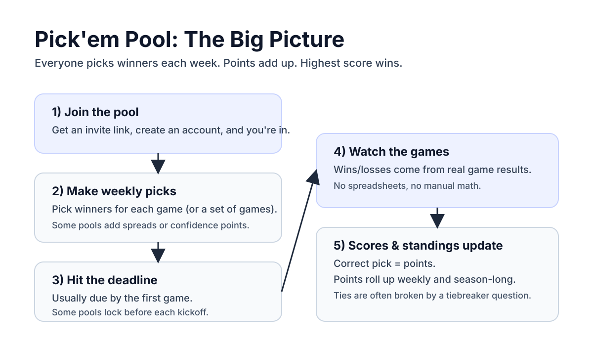
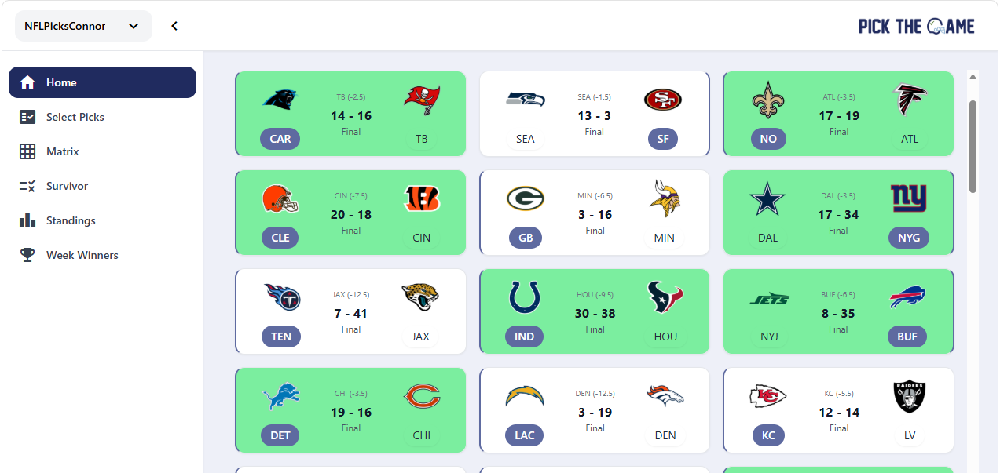

April 20, 2026
Pick'em Pools: Formats Explained
If you follow football but you've never joined a pool before, Pick'em is the easiest place to start. The idea is simple: each week, you pick who you think will win, and you earn points when you're right.
What is a Pick'em pool?
A Pick'em pool is a group game where everyone predicts winners for a set of games (usually every NFL game that week). You can play for bragging rights, a small buy-in, or just for fun with friends, family, or coworkers.
You do: choose teams before kickoff.
The pool does: track results, points, and standings automatically.
The season does: give you a fresh shot every week.
Why people love Pick'em
It makes every game matter. Even a random afternoon matchup becomes something you care about.
It's beginner-friendly. You don't need to know point spreads, fantasy projections, or advanced stats.
It's social. Picks spark friendly trash talk, group chats, and weekly debates.
You can recover. A bad week hurts, but it doesn't eliminate you for the season.
How it works (diagram)
Here's the basic loop you'll repeat all season:

The 2 most common Pick'em formats
1) Straight Up (Winner Only)
The classic: pick the team that will win the game. Each correct pick is worth 1 point. This is the best format for first-timers.

2) Against the Spread (ATS)
Instead of picking the outright winner, you're picking whether a team will cover the point spread. ATS levels the playing field because favorites aren't automatic picks — they have to win by enough.
Quick example
KC -6.5 vs DEN +6.5
If KC wins by 7+, KC covers. If KC wins by 6 or less (or loses), DEN covers.
Beginner tips (so you don't feel lost)
Start simple: Straight Up is the easiest format to learn.
Respect the deadline: picks are usually due by the first game, but some pools lock before each game's kickoff.
Don't overthink it: your goal isn't perfect picks — it's beating your friends.
Ready to try it with your group?
Create a Pool